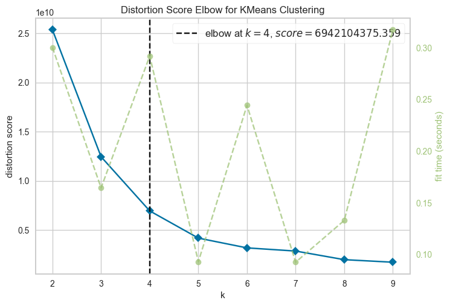

#!/bin/sh kaggle datasets download -d teejmahal20/airline-passenger-satisfactionAirline Passenger Satisfaction
Clustering and Multivariate Visualization with python
The scope of this notebook is to practice interactive visualizations with plotly, by exploring data about the satisfaction of passengers through a set of variable: this will pose the main challenge, however, as only 2-D or 3-D visualizations are possible.
This implies that, in addition to common visualization techniques, dimensionality reduction is required to obtain the desidered visual insights.
Imports
Tip
To download the dataset directly from Kaggle, uncomment the following code cell.
Loading all the necessary libraries and setting plotly options to customize graphs and allow interactivity in the HTML render:
import pandas as pd
import numpy as np
import plotly.express as px
import plotly.io as pio
from pathlib import Path
import zipfile
import shutil
from sklearn.cluster import KMeans
from sklearn.decomposition import PCA
from yellowbrick.cluster import KElbowVisualizer, SilhouetteVisualizer
pio.templates.default = "plotly_white"
pio.renderers.default = 'iframe_connected'
np.set_printoptions(precision=3)I wish to keep a tidy working directory: this means that I do not want to store files longer than necessary. Hence I will delete the unzipped datasets after they have been loaded in memory:
data_path = Path("data/")with zipfile.ZipFile(
data_path / "airline-passenger-satisfaction.zip",
'r'
) as zip_ref:
zip_ref.extractall(data_path / "unzipped/")
passengers_train = pd.read_csv(
data_path / "unzipped/train.csv"
)
test = pd.read_csv(
data_path / "unzipped/test.csv"
)
shutil.rmtree(
data_path / "unzipped/"
)Data cleaning and preparation
- What are the main variables?
- What are their statistical summaries?
passengers_train.info()<class 'pandas.core.frame.DataFrame'>
RangeIndex: 103904 entries, 0 to 103903
Data columns (total 25 columns):
# Column Non-Null Count Dtype
--- ------ -------------- -----
0 Unnamed: 0 103904 non-null int64
1 id 103904 non-null int64
2 Gender 103904 non-null object
3 Customer Type 103904 non-null object
4 Age 103904 non-null int64
5 Type of Travel 103904 non-null object
6 Class 103904 non-null object
7 Flight Distance 103904 non-null int64
8 Inflight wifi service 103904 non-null int64
9 Departure/Arrival time convenient 103904 non-null int64
10 Ease of Online booking 103904 non-null int64
11 Gate location 103904 non-null int64
12 Food and drink 103904 non-null int64
13 Online boarding 103904 non-null int64
14 Seat comfort 103904 non-null int64
15 Inflight entertainment 103904 non-null int64
16 On-board service 103904 non-null int64
17 Leg room service 103904 non-null int64
18 Baggage handling 103904 non-null int64
19 Checkin service 103904 non-null int64
20 Inflight service 103904 non-null int64
21 Cleanliness 103904 non-null int64
22 Departure Delay in Minutes 103904 non-null int64
23 Arrival Delay in Minutes 103594 non-null float64
24 satisfaction 103904 non-null object
dtypes: float64(1), int64(19), object(5)
memory usage: 19.8+ MBpassengers_train.describe()| Unnamed: 0 | id | Age | Flight Distance | Inflight wifi service | Departure/Arrival time convenient | Ease of Online booking | Gate location | Food and drink | Online boarding | Seat comfort | Inflight entertainment | On-board service | Leg room service | Baggage handling | Checkin service | Inflight service | Cleanliness | Departure Delay in Minutes | Arrival Delay in Minutes | |
|---|---|---|---|---|---|---|---|---|---|---|---|---|---|---|---|---|---|---|---|---|
| count | 103904.000000 | 103904.000000 | 103904.000000 | 103904.000000 | 103904.000000 | 103904.000000 | 103904.000000 | 103904.000000 | 103904.000000 | 103904.000000 | 103904.000000 | 103904.000000 | 103904.000000 | 103904.000000 | 103904.000000 | 103904.000000 | 103904.000000 | 103904.000000 | 103904.000000 | 103594.000000 |
| mean | 51951.500000 | 64924.210502 | 39.379706 | 1189.448375 | 2.729683 | 3.060296 | 2.756901 | 2.976883 | 3.202129 | 3.250375 | 3.439396 | 3.358158 | 3.382363 | 3.351055 | 3.631833 | 3.304290 | 3.640428 | 3.286351 | 14.815618 | 15.178678 |
| std | 29994.645522 | 37463.812252 | 15.114964 | 997.147281 | 1.327829 | 1.525075 | 1.398929 | 1.277621 | 1.329533 | 1.349509 | 1.319088 | 1.332991 | 1.288354 | 1.315605 | 1.180903 | 1.265396 | 1.175663 | 1.312273 | 38.230901 | 38.698682 |
| min | 0.000000 | 1.000000 | 7.000000 | 31.000000 | 0.000000 | 0.000000 | 0.000000 | 0.000000 | 0.000000 | 0.000000 | 0.000000 | 0.000000 | 0.000000 | 0.000000 | 1.000000 | 0.000000 | 0.000000 | 0.000000 | 0.000000 | 0.000000 |
| 25% | 25975.750000 | 32533.750000 | 27.000000 | 414.000000 | 2.000000 | 2.000000 | 2.000000 | 2.000000 | 2.000000 | 2.000000 | 2.000000 | 2.000000 | 2.000000 | 2.000000 | 3.000000 | 3.000000 | 3.000000 | 2.000000 | 0.000000 | 0.000000 |
| 50% | 51951.500000 | 64856.500000 | 40.000000 | 843.000000 | 3.000000 | 3.000000 | 3.000000 | 3.000000 | 3.000000 | 3.000000 | 4.000000 | 4.000000 | 4.000000 | 4.000000 | 4.000000 | 3.000000 | 4.000000 | 3.000000 | 0.000000 | 0.000000 |
| 75% | 77927.250000 | 97368.250000 | 51.000000 | 1743.000000 | 4.000000 | 4.000000 | 4.000000 | 4.000000 | 4.000000 | 4.000000 | 5.000000 | 4.000000 | 4.000000 | 4.000000 | 5.000000 | 4.000000 | 5.000000 | 4.000000 | 12.000000 | 13.000000 |
| max | 103903.000000 | 129880.000000 | 85.000000 | 4983.000000 | 5.000000 | 5.000000 | 5.000000 | 5.000000 | 5.000000 | 5.000000 | 5.000000 | 5.000000 | 5.000000 | 5.000000 | 5.000000 | 5.000000 | 5.000000 | 5.000000 | 1592.000000 | 1584.000000 |
Variables description
This is a thorough explanation of what are the variables we will be dealing with:
- Categorical variables:
Gender: gender of the passengers (Female, Male)Customer Type: The customer type (Loyal customer, disloyal customer)Type of Travel: purpose of the flight of the passengers (Personal Travel, Business Travel)Class: travel class in the plane of the passengers (Business, Eco, Eco Plus)Satisfaction: Airline satisfaction level(Satisfaction, neutral or dissatisfaction)
- Numerical variables:
Age: the actual age of the passengersFlight distance: the flight distance of this journeyInflight wifi service: satisfaction level of the inflight wifi service (0:Not Applicable;1-5)Departure/Arrival time convenient: satisfaction level of Departure/Arrival time convenientEase of Online booking: satisfaction level of online bookingGate location: satisfaction level of Gate locationFood and drink: satisfaction level of Food and drinkOnline boarding: satisfaction level of online boardingSeat comfort: satisfaction level of Seat comfortInflight entertainment: satisfaction level of inflight entertainmentOn-board service: satisfaction level of On-board serviceLeg room service: satisfaction level of Leg room serviceBaggage handling: satisfaction level of baggage handlingCheck-in service: satisfaction level of Check-in serviceInflight service: satisfaction level of inflight serviceCleanliness: satisfaction level of CleanlinessDeparture Delay in Minutes: Minutes delayed when departureArrival Delay in Minutes: Minutes delayed when Arrival
Data cleaning
First step: cleaning and tidying the datataset, to prepare it for the following analysis.
- Removing unnecessary variables.
passengers_train.drop(
[
"Unnamed: 0",
"id"
],
axis=1,
inplace=True
)- Transforming categorical variables.
passengers_train = pd.get_dummies(
passengers_train,
dtype="float",
prefix="",
prefix_sep=""
)passengers_train.head()| Age | Flight Distance | Inflight wifi service | Departure/Arrival time convenient | Ease of Online booking | Gate location | Food and drink | Online boarding | Seat comfort | Inflight entertainment | ... | Male | Loyal Customer | disloyal Customer | Business travel | Personal Travel | Business | Eco | Eco Plus | neutral or dissatisfied | satisfied | |
|---|---|---|---|---|---|---|---|---|---|---|---|---|---|---|---|---|---|---|---|---|---|
| 0 | 13 | 460 | 3 | 4 | 3 | 1 | 5 | 3 | 5 | 5 | ... | 1.0 | 1.0 | 0.0 | 0.0 | 1.0 | 0.0 | 0.0 | 1.0 | 1.0 | 0.0 |
| 1 | 25 | 235 | 3 | 2 | 3 | 3 | 1 | 3 | 1 | 1 | ... | 1.0 | 0.0 | 1.0 | 1.0 | 0.0 | 1.0 | 0.0 | 0.0 | 1.0 | 0.0 |
| 2 | 26 | 1142 | 2 | 2 | 2 | 2 | 5 | 5 | 5 | 5 | ... | 0.0 | 1.0 | 0.0 | 1.0 | 0.0 | 1.0 | 0.0 | 0.0 | 0.0 | 1.0 |
| 3 | 25 | 562 | 2 | 5 | 5 | 5 | 2 | 2 | 2 | 2 | ... | 0.0 | 1.0 | 0.0 | 1.0 | 0.0 | 1.0 | 0.0 | 0.0 | 1.0 | 0.0 |
| 4 | 61 | 214 | 3 | 3 | 3 | 3 | 4 | 5 | 5 | 3 | ... | 1.0 | 1.0 | 0.0 | 1.0 | 0.0 | 1.0 | 0.0 | 0.0 | 0.0 | 1.0 |
5 rows × 29 columns
passengers_train.dropna(
inplace=True
)PCA
Principal Component Analysis (PCA) involves projections from higher dimensional spaces into lower dimensions and is used to obtain 2-D visualizations.
passengers_2d = PCA(
n_components=2,
)
passengers_2d.fit(passengers_train)PCA(n_components=2)In a Jupyter environment, please rerun this cell to show the HTML representation or trust the notebook.
On GitHub, the HTML representation is unable to render, please try loading this page with nbviewer.org.
PCA(n_components=2)
The explained variance ratio is almost 1: this suggests that the projected dimensions explain almost all of the original variability and therefore is a good approximation of the information contained originally.
passengers_2d.explained_variance_ratio_.sum()0.9996962403495984Visualizing the resulting data points does not yield immediate insight, they are clustered together and there are not evident patterns or clusters which might facilitate predictions. Reducing the number of points is often useful in such a crowded chart and will be attempted by “downsampling” through a random selection of statistical units.
df_reduced_2d = passengers_2d.transform(passengers_train)
fig = px.scatter(
df_reduced_2d[:, 0],
y = df_reduced_2d[:, 1]
)
fig.show()df_reduced_2d = passengers_2d.transform(passengers_train)
fig = px.scatter(
x = df_reduced_2d[:, 0],
y = df_reduced_2d[:, 1]
)
fig.show();downsampling_idx = df_reduced_2d[
np.random.choice(
df_reduced_2d.shape[0],
1000,
replace=False
)
]
px.scatter(
x = downsampling_idx[:, 0],
y = downsampling_idx[:, 1]
)I am not sure that these visualization technique help in analyzing the dataset. Further down I will add colors corresponding to automated clustering approaches, to see if this allows us to recognize patterns or/and clusters.
K-Means
The main point here is to find what I will call the K-mean passenger: we are interested in the mean passenger as it can represent a persona containing the average characteristic of a particular market segment. This information can be used for feature engineering, guiding the algorithm used for predictive methods by summarising the features space.
First of all, the Elbow method will tell us which is the optimal number of clusters, the fundamental hyperparameter in this model. Setting a random state ensures consistency, as each time the algorithm is run new clusters are created.
model = KMeans(
n_init = 'auto',
random_state = 19
)
elbow_2 = KElbowVisualizer(model, k = (2, 10))
elbow_2.fit(df_reduced_2d)
elbow_2.show();
The silhouette score confirms the result found; hence, K = 4: we aim at finding 4 clusters.
silhouette = SilhouetteVisualizer(model)
silhouette.fit(df_reduced_2d)
silhouette.show();K = 4
km_4 = KMeans(
n_clusters = 4,
n_init = 'auto',
random_state = 19
)
km_4.fit(
df_reduced_2d,
)KMeans(n_clusters=4, n_init='auto', random_state=19)In a Jupyter environment, please rerun this cell to show the HTML representation or trust the notebook.
On GitHub, the HTML representation is unable to render, please try loading this page with nbviewer.org.
KMeans(n_clusters=4, n_init='auto', random_state=19)
y_km_4 = km_4.predict(df_reduced_2d).astype(pd.Categorical)
fig = px.scatter(
x = df_reduced_2d[:, 0],
y = df_reduced_2d[:, 1],
color=y_km_4,
opacity=.7,
color_discrete_sequence=px.colors.qualitative.Bold
)
fig.show() The clustering algo worked also in this situation with a good performance. Following the insight given by the Elbow method affects positively the computation time.
km_4 = KMeans(
n_clusters = 4,
n_init = 'auto',
random_state = 19
)
%timeit km_4.fit(df_reduced_2d)98.8 ms ± 39.4 ms per loop (mean ± std. dev. of 7 runs, 10 loops each)Further testing is needed on the whole processing chain. However, there is an important aspect left that needs more study to be understood.
Visualizing the clusters can be done easily since the output of the predict methods allows me to obtain a Series of labels. This means that we can use that information as a grouping label and apply a mean method to the resulting group to obtain a syntethic rapresentation of the centroid, which corresponds to the (completely hypothetical, as it does not to an observed data point) KMC (K-th Mean Customer). We only need to:
- Create a dataframe with the results and use that for the grouping variables.
- Create an array that contains both the resulting compressed data from the PCA 2D and the corresponding labels; then we can downsample the dataset and tranform it to better visualize the clusters. This ensures that all the labels and shapes fit together.
downsampling_idx = df_reduced_2d[np.random.choice(df_reduced_2d.shape[0], 1000, replace=False)]
fig = px.scatter(
x = downsampling_idx[:, 0],
y = np.log(
downsampling_idx[:, 1]
)
)
fig.show();/var/folders/mm/nzts_rm10vzfv61dt475_5xh0000gp/T/ipykernel_2953/952221750.py:5: RuntimeWarning:
invalid value encountered in log
viz_df_2D = pd.DataFrame(
{"dim1": df_reduced_2d[:, 0],
"dim2": df_reduced_2d[:, 1],
"labels": y_km_4
}
)
downsampling_idx = viz_df_2D.sample(n = 5000, axis=0)
fig = px.scatter(
downsampling_idx,
x = downsampling_idx.dim1,
y = np.log(
downsampling_idx.dim2
),
color=downsampling_idx.labels,
color_discrete_sequence=px.colors.qualitative.Bold
)
fig.show();/Users/themagician/py-venv/kaggle-venv/env/lib/python3.11/site-packages/pandas/core/arraylike.py:396: RuntimeWarning:
invalid value encountered in log
Code for the K-Mean Customer summary table
What does the average customer belonging to each cluster look like?
pd.concat(
[
pd.DataFrame(
passengers_2d.inverse_transform(
df_reduced_2d
)
), pd.DataFrame(
{"labels":y_km_4}
)
],
axis=1
).rename(
columns = dict(
enumerate(
passengers_train.columns
)
)
).groupby(
"labels"
).mean()| Age | Flight Distance | Inflight wifi service | Departure/Arrival time convenient | Ease of Online booking | Gate location | Food and drink | Online boarding | Seat comfort | Inflight entertainment | ... | Male | Loyal Customer | disloyal Customer | Business travel | Personal Travel | Business | Eco | Eco Plus | neutral or dissatisfied | satisfied | |
|---|---|---|---|---|---|---|---|---|---|---|---|---|---|---|---|---|---|---|---|---|---|
| labels | |||||||||||||||||||||
| 0 | 38.207456 | 413.654018 | 2.722578 | 3.083697 | 2.685546 | 2.972292 | 3.143417 | 3.024760 | 3.278348 | 3.225134 | ... | 0.490113 | 0.749514 | 0.250486 | 0.593556 | 0.406444 | 0.296662 | 0.606356 | 0.096982 | 0.681697 | 0.318303 |
| 1 | 40.925459 | 2208.460066 | 2.739686 | 3.029055 | 2.851054 | 2.983103 | 3.280129 | 3.547662 | 3.652638 | 3.534173 | ... | 0.495576 | 0.906280 | 0.093720 | 0.816326 | 0.183674 | 0.716723 | 0.243923 | 0.039354 | 0.414832 | 0.585168 |
| 2 | 39.303757 | 1140.621560 | 2.728895 | 3.061561 | 2.752331 | 2.976843 | 3.197742 | 3.235862 | 3.428994 | 3.349323 | ... | 0.492344 | 0.812965 | 0.187035 | 0.683856 | 0.316144 | 0.466645 | 0.459680 | 0.073675 | 0.574282 | 0.425718 |
| 3 | 42.752586 | 3418.020789 | 2.750603 | 2.992226 | 2.962341 | 2.990559 | 3.371213 | 3.899364 | 3.903925 | 3.741459 | ... | 0.499275 | 1.011882 | -0.011882 | 0.966524 | 0.033476 | 0.999654 | -0.000205 | 0.000551 | 0.235661 | 0.764339 |
4 rows × 29 columns